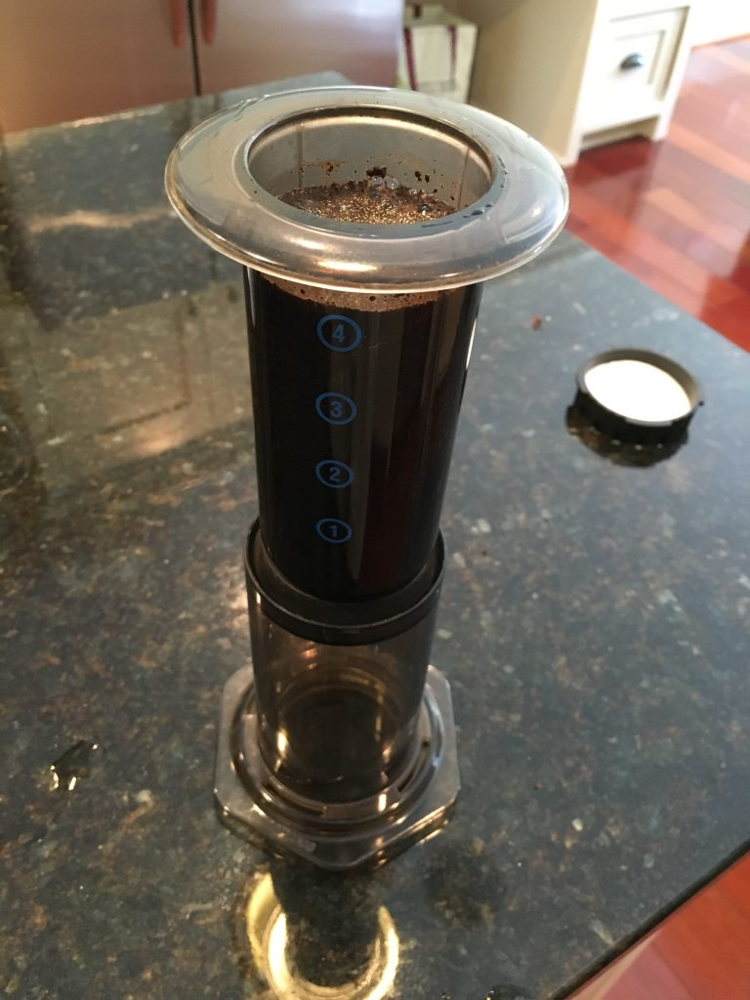

Columbia, SC is one of ten US cities ideally positioned for viewing the 2017 eclipse. Should be fun to watch with the kids.

Image credit: Michael Zeiler, greatamericaneclipse.com.
Columbia, SC is one of ten US cities ideally positioned for viewing the 2017 eclipse. Should be fun to watch with the kids.
Image credit: Michael Zeiler, greatamericaneclipse.com.
Self-employment and health insurance, a cautionary tale.
Last year, we learned that we were going to be financially responsible for virtually every dollar of my son’s delivery and open heart surgery. This is a quick post-mortem of how we fell through the cracks in the system.
My son’s condition was diagnosed in-utero, when we were still living in Virginia. I immediately began thinking ahead, trying to figure out what insurance to buy before we arrived in South Carolina. We checked with the hospital, and asked if ▩▩▩▩▩▩ would be good insurance to carry. They said yes. I immediately bought the best and most expensive plan available.
Fast forward several weeks. We had arrived in South Carolina, and the time had come to make our first prenatal appointment with the hospital. Shortly after making that appointment, we got a call informing us that our insurance would not be accepted. It wouldn’t even be processed at out-of-network rates. I was shocked.
How could this be? Since I am a self-employed software developer, I bought health insurance out-of-pocket, not through an employer sponsored plan. What I did not realize was that, for this particular insurance company, the hospital accepts only employer sponsored insurance plans. Apparently the individual plans that are sold to self-employed individuals are a completely different product.
So, months earlier when we contacted the hospital to ask if ▩▩▩▩▩▩ would be accepted, whoever answered ‘yes’ was apparently unaware of this caveat. Likewise, I was unaware that I should have probed further.
If something catastrophic happens, your local hospital may not be equipped to handle it. You may be forced to go to the nearest major medical center for care.
So if you’re self-employed and are preparing to buy health insurance, ask if the nearest major medical center is covered by the plan. Are they sure? Call back and ask again. Get it in writing. Okay now call the medical center and see if they agree.
Then I watched as it crawled along the side of the house and then into the dryer exhaust vent. Never trust a snake, lesson learned.
I was lifting weights out in the garage when a 3ft king snake interrupted my workout. It agreed to catch mice for me if I spared it’s life, so I just chased it out with a broom.
Not my finest hour.

🚨 Stranger Things Vol 1 Soundtrack is now available. https://itun.es/us/g2Sieb
“Google Photos: Free Up Space” https://mattmorris.org/2016/08/10/google-photos-free-up-space/
Google is right to attack Apple on this front. My mother has a 16G iPhone, no desktop computer, and no broadband at her home. This is our procedure for getting pictures off her iPhone.
Talk about jumping through hoops.
I’m digitizing some old 8mm family video that has never seen the light of day. Funny how any footage from the pre-iPhone era feels like a historic artifact.
{kind=link}